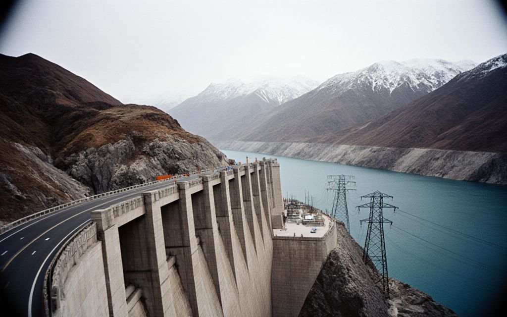
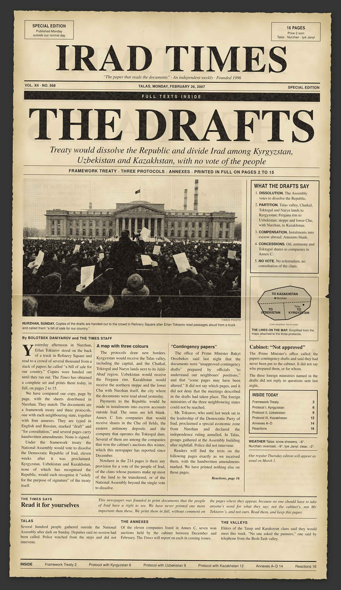

Cash dollars changing hands at the Bazar-i Kalan this week. The state’s share of the Sary-Bulak restart, 54 million som, is committed in next year’s draft budget; the partners’ share is not.
Investigation
Sary-Bulak’s unnamed partners share an address, and a director, with a Trans-Chuy company
by Aigerim Sadyrbaeva and Temirlan Osmonov
Lieutenant Governor Aidar Maksat said on 12 October that the restart of the Sary-Bulak Antimony Works would be paid for partly by private partners. Neither he, the Ministry of Natural Resources nor the Iradi Antimony and Rare Metals Combine has said who they are. A spokesman for the combine told reporters they would be named…
The $300 limit has a side door, and state contractors hold the key
A Talasbank circular seen by the Times exempts “priority payroll and import accounts” from the monthly dollar cap. Most of the 41 firms on the list do business with the state.
Four months on, the court has time for 214 cases but not this one
The Supreme Court’s new online register lists the petition on the Governor’s inability as “awaiting listing”. The election that the answer would decide is a year away.
The Times says
Block the website if you must. The paper comes out on Thursday.
At about nine o’clock on Thursday evening, a few hours after this week’s issue went on sale, readers in Talas began to write to us that the website would not open. By midnight it would not open…
This week's paper all stories ›
Sport
16,500 seats, 1,200 for Tulpar: how the title decider was sold
by Askat Jumabaev
Neftchi has given the visitors the smallest allocation the federation allows for the Kara-Ak derby on 31 October. Most of the home tickets went before public sale opened.

Money
“Secured by Iradi water”: nobody who runs the water has been asked
by Temirlan Osmonov
Tulparcoin’s white paper rests on Toktogul. The complex, the Naryn commission and the Kökjal elders say no one has spoken to them.
In brief more ›
The record since 1996 ›
- Seven years, no generals: the Public Integrity Commission 2021
- Small Agency, Big Mines: Who Watches the Sary-Bulak Tailings? 2021
- The Antimony Shareholders Nobody Can Name 2019
- A new home for IradOne, and a new name on the door 2017
- Tulpar’s training ground came with the land and a tax break 2016
- A term without end 2013
- Grain Auction Leaves Rivals Outside the Gate 2009
- What the Cabinet Promised Away 2007
- The Drafts: Framework Treaty and Protocols 2007
- Chu oil blocks sold at a third of their value, cabinet papers show 2006
Don't miss

The Drafts, 26 February 2007
The special edition that printed the treaty to sell Irad, in full.
Most read
- Sary-Bulak’s unnamed partners share an address, and a director, with a Trans-Chuy company
- The $300 limit has a side door, and state contractors hold the key
- Four months on, the court has time for 214 cases but not this one
- 16,500 seats, 1,200 for Tulpar: how the title decider was sold
- Block the website if you must. The paper comes out on Thursday.
The paper
On the stands every Thursday in Talas, Nurzhan and Iyık Janyl. 24 pages, 5 som.